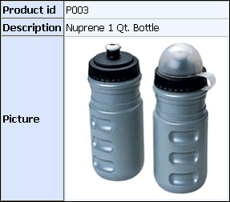

GRD_PRODIMG Grid Component
Purpose
The GRD_PRODIMG grid component is used on the ASWUPLOADIMG.A5W page to show the existing image saved in the picture field for a record in the product table.

Description
The GRD_PRODIMG component is a read-only columnar grid based on the product table.
Containers
Notable Grid Control Property Settings
|
Control |
Property |
Description |
|
Picture |
Image Properties > In-line style |
"height: 200px; width: 200px;" |
|
Image Properties > Image path |
See Also